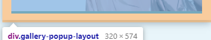

前端常见的兼容性解决方案
浏览器兼容性问题及解决方案
常见的浏览器内核：
常见的浏览器内核可以分为4种：Trident、Gecko、Blink、Webkit
| 浏览器 | 内核 |
|---|---|
| IE | Trident内核，也称为IE内核 |
| chrome | Webkit内核，现在是Blink内核 |
| Firefox | Gecko内核，也称为Firefox内核 |
| Safari | Webkit内核 |
| Opera | 最初是Presto内核，后采用Webkit，现为Blink内核 |
CSS兼容性
1.不同浏览器的标签默认的外补丁和内补丁不同
问题表现：随便写几个标签，不加样式控制的情况下，各自的margin和padding差异较大。
解决方案：*{margin:0;padding:0;}
2.块级标签float后，又有横行的margin情况下，在IE6显示margin比设置的大
问题表现：常见症状是IE6中后面的块级被顶到下一行。
解决方案：在float的标签样式控制中加入 display:inline，将其转化为行内属性。
备注：横向布局的时候我们通常都是用float实现的，横向的间距设置如果用margin实现，这就是一个必然会碰到的兼容性问题。
3.行内属性标签，设置display:block后采用float布局，又有横行的margin的情况，IE6间距bug（比设置的大）
问题表现：IE6里的间距比超过设置的间距
解决方案：在display:block;后面加入display:inline;display:table;
备注：同问题**#2**。行内属性标签，为了设置宽高，需要设置display:block; （除了input标签比较特殊）。不过因为它本身就是行内属性标签，所以再加上display:inline的话，它的高宽就不可设了。这时候还需要在display:inline后面加入display:table。
4.设置较小高度标签（一般小于10px），在IE6，IE7，遨游中高度超出自己设置高度
问题表现：IE6/7和遨游里这个标签的高度不受控制，超出自己设置的高度。
解决方案：给超出高度的标签设置overflow:hidden;，或者设置行高line-height 小于你设置的高度。
5.图片默认有间距
问题表现：几个img标签放在一起的时候，有些浏览器会有默认的间距，加了问题**#1**中提到的通配符也不起作用。
解决方案：使用float属性为img布局
备注：因为img标签是行内属性标签，所以只要不超出容器宽度，img标签都会排在一行里，但是部分浏览器的img标签之间会有个间距。
另外，关于div中使用img后的高度多了4px的问题：

因为img是行内元素，默认display: inline; 它与文本的默认行为类似，下边缘是与基线（baseline）对齐，而不是紧贴容器下边缘。设置display:block;即可消除4px。 原贴
6.标签最低高度设置min-height不兼容
问题表现：注意min-height本身就是一个不兼容的CSS属性
解决方案：如果我们要设置一个标签的最小高度200px，需要进行的设置为：{min-height:200px; height:auto !important; height:200px; overflow:visible;}
备注：min-height的用途在于，设置最小高度，并且当内容高度大于这个值时，容器高度被撑高，而不是出现滚动条。
7.透明度的兼容CSS设置
.transparent_class {
filter:alpha(opacity=50); //IE
-moz-opacity:0.5; //firefox
-khtml-opacity: 0.5; //
opacity: 0.5; //Chrome
}JS兼容性
1.键盘事件 keyCode 兼容性写法
var input = document.getElementById('input')
var result = document.getElementById('result')
function getKeyCode(e) {
e = e ? e : (window.event ? window.event : "")
return e.keyCode ? e.keyCode : e.which
}
input.onkeypress = function(e) {
result.innerHTML = getKeyCode(e)
}2.求窗口大小的兼容写法
// 浏览器窗口可视区域大小（不包括工具栏和滚动条等边线）
// 1600 * 525
var client_w = document.documentElement.clientWidth || document.body.clientWidth;
var client_h = document.documentElement.clientHeight || document.body.clientHeight;
// 网页内容实际宽高（包括工具栏和滚动条等边线）
// 1600 * 8
var scroll_w = document.documentElement.scrollWidth || document.body.scrollWidth;
var scroll_h = document.documentElement.scrollHeight || document.body.scrollHeight;
// 网页内容实际宽高 (不包括工具栏和滚动条等边线）
// 1600 * 8
var offset_w = document.documentElement.offsetWidth || document.body.offsetWidth;
var offset_h = document.documentElement.offsetHeight || document.body.offsetHeight;
// 滚动的高度
var scroll_Top = document.documentElement.scrollTop||document.body.scrollTop;3.跨浏览器的事件处理程序
将所有事件处理程序封装在EventUtil对象中
var eventUtil{
/*
* element:目标元素
* type:绑定的事件类型
* handler:事件处理程序
*/
addHandler:function(element,type,handler){
if(element.addEventListener){
//DOM 2级事件处理程序
element.addEventListener(type,handler,false);//false 冒泡阶段调用；true 捕获阶段调用
}else if(element.attachEvent){
//IE事件处理程序
element.attachEvent('on'+type,handler); //只支持事件冒泡
}else{
//DOM 0级事件处理程序
element['on'+type]=handler;
}
},
removeHandler:function(element,type,handler){
if(element.removeEventListener){
//DOM 2级事件处理程序
element.removeEventListener(type,handler,false);
}else if(element.detachEvent){
//IE事件处理程序
element.detachEvent('on'+type,handler);
}else{
//DOM 0级事件处理程序
element['on'+type]=null;
}
},
/*以下是对event事件对象的兼容
1、DOM的事件对象：
(1)type:事件类型
(2)target:事件目标
(3)stopPropagation()方法:阻止事件冒泡
(4)preventDefault()方法:阻止事件的默认行为
2、IE中的事件对象：
(1)type:事件类型
(2)srcElement:事件目标
(3)cancelBubble属性:阻止事件冒泡 true表示阻止冒泡，false表示不阻止
(4)returnValue属性:阻止事件的默认行为
*/
getEvent:function(event){
return event?event:window.event;
},
getTarget:function(event){
return target || srcElement;
},
stopPropagation:function(event){
if(event.stopPropagation){
event.stopPropagation();
}else{
event.cancelBubble=true;
}
},
preventDefault:function(event){
if(event.preventDefault){
event.preventDefault();
}else{
event.returnValue=false;
}
},
}参考
本博客所有文章除特别声明外，均采用 CC BY-SA 4.0 协议 ，转载请注明出处！